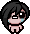
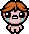
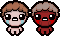

Większość postaci w The Binding of Isaac jest zablokowana na starcie. Poniżej znajdziesz dokładne warunki ich odblokowania.
Magdalene
Posiadaj 7 czerwonych serc jednocześnie.
Cain
Zbierz 55 monet w jednym runie.

Judas
Pokonaj Satan po raz pierwszy.

??? (Blue Baby)
Pokonaj Mom's Heart 10 razy.

Eve
Nie podnieś czerwonego serca przez 2 piętra.
Samson
Ukończ 2 piętra bez leczenia.

Azazel
Zawrzyj 3 paktów z diabłem w jednym runie.

Lazarus
Zgiń 4 razy.

Eden
Pokonaj Mom's Heart (zużywa żeton Edena).

The Lost
Zgiń z Missing Poster w pokoju z kolcami.
Keeper
Wrzuć 1000 monet do Greed Donation Machine.
Apollyon
Pokonaj Mega Satan.
The Forgotten
Wykonaj specjalny quest z łopatą.

Bethany
Pokonaj Mom's Heart jako Lazarus bez śmierci.

Jacob & Esau
Pokonaj Mother.